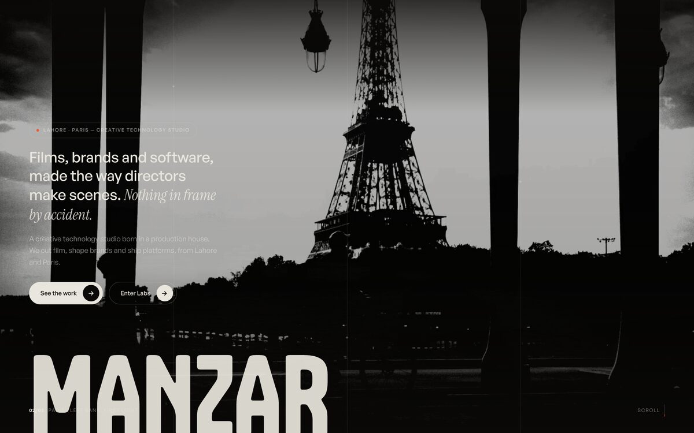

AI chat & copilots
Chat for your customers and copilots for your staff, grounded in your own databases and documents, so every answer cites the record it came from.
 Labs
Labs
Chat that knows your business, voice agents that hold a real conversation, and a guardrail for the day the model is wrong.
 L/03 · AI Development
Applied models · not demo-ware
L/03 · AI Development
Applied models · not demo-ware
Chat for your customers and copilots for your staff, grounded in your own databases and documents, so every answer cites the record it came from.
Retrieval-augmented generation wired into an existing product, grounded in your data, not the open internet.
Speech-to-text, dialogue logic and text-to-speech chained into an agent that runs a real conversation, not a scripted menu.
The repetitive steps between two systems handed to an agent that runs unattended and logs what it did.
Prompt testing, output validation and fallback paths, so a bad response gets caught before a customer sees it.
Tuning a model's behaviour to your product's voice and edge cases, not the default assistant tone.
Vector databases, embedding pipelines and inference cost kept under control at production volume.
We map the workflow the model has to fit into, and the failure modes that would make it worse than doing the task by hand.
Prompt and pipeline iteration against real inputs from your product, evaluated against cases that actually happen, not a curated demo set.
The system goes live behind guardrails and logging, with a plan already written for the day it gets something wrong.
 Production AI
Production AI
Answers that cite the record they came from.
Python, LLM APIs (OpenAI, Anthropic, and open-weight models where the job calls for it), retrieval and orchestration tooling, vector databases such as pgvector or Pinecone, speech pipelines for voice agents. What we reach for, chosen per job. Never a badge wall.
"Ardenta answers the phone around the clock, replies from the business's own documents with the source it used, and books straight into the calendar, on the number they already have."
Join the Ardenta waitlistAI features are usually scoped as a two-week Sprint first, to prove the approach before it's built into the product. See how engagements are typically priced.
The other room. Commercials, brand films and campaign stills, from Lahore and Paris.
